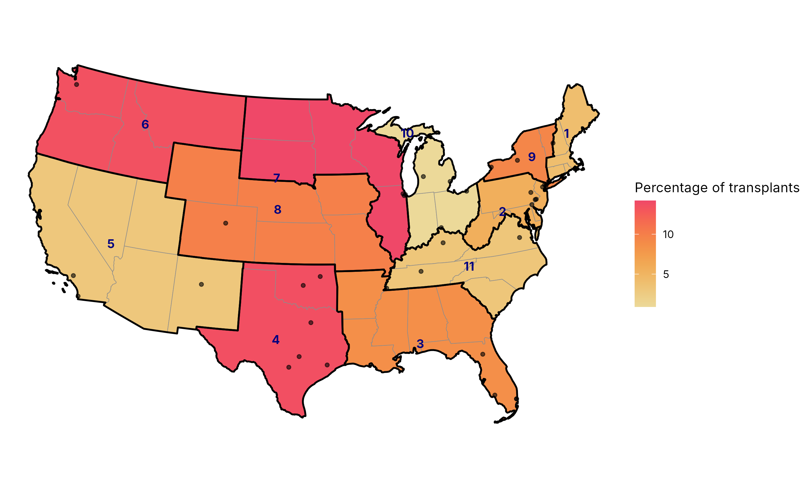

Methodological background
A short introduction to drawing maps in R, enough to follow the code on this site. For a fuller treatment, Kyle Walker’s Analyzing US Census Data is free online (Walker 2023). Its chapters on Census geographic data, mapping and spatial analysis cover everything here in more depth, with US examples. The links below point to the relevant sections.
Spatial data are data frames with a geometry column
The sf package stores spatial data as an ordinary data frame with one extra column, geometry, holding a point, line or polygon for each row. So the usual dplyr verbs work on it: filter() keeps some regions, left_join() attaches a table of values, and group_by() with summarise() merges polygons, which is how states become regions. Walker introduces sf objects in §5.1.1.
On this site, sRtr supplies the sf objects: UNOS_regions_sf (one polygon per state, tagged with its UNOS region), get_hrsa_optn_regions() (one polygon per region) and get_hrsa_transplant_centers() (one point per center and organ) (Hemmige and Czeresnia 2026). Walker uses the tigris package for Census boundaries in the same way; sRtr’s state polygons come from the same Census cartographic boundary files.
Coordinate reference systems
Every geometry is stored in a coordinate reference system (CRS). Longitude and latitude are angles, not distances; drawn as if they were x and y, they stretch the United States east to west and make northern states look larger than they are. A projected CRS such as NAD83 / Conus Albers (EPSG:5070) is designed for the contiguous states and keeps areas comparable, which matters when the eye reads shaded area.
Two habits follow. Transform every layer to the one CRS with sf::st_transform() before combining or plotting them, as the HOPE-CDC analysis does, rather than relying on the plotting function to reconcile them. And set the CRS of the plot itself with coord_sf(crs = ...). Walker covers both, and how to choose a projection with the crsuggest package, in §5.4.
A choropleth: shading areas by a value
A choropleth shades each area by a value. In ggplot2, geom_sf(aes(fill = value)) draws it; a sequential colour scale suits a quantity that runs from low to high. Walker builds one step by step in §6.2, including the theme_void() and labs() calls used here.
When the value belongs to a UNOS region, every state in the region is shaded the same. Thin state lines under thick region outlines remind the reader of that: the shading says nothing about any state alone. Several UNOS regions also cross state lines (Northern Virginia is in Region 2, for example); sRtr assigns each state to one region, so the map is an approximation at those edges.
Points on the map
Transplant centers are points. Drawn with geom_sf() at their true locations, partly transparent, they show where programs are and where they cluster. The original maps used geom_jitter(), which separates overlapping points by moving each one randomly, so no center is where it should be.
tmap and insets
tmap is a second mapping package, built for thematic maps; Walker introduces it in §6.3. His examples use tmap 3. This site uses tmap 4, whose syntax changed: tm_polygons(fill = ...) with fill.scale and fill.legend replaces arguments such as col, style and palette. The tmap website documents version 4.
An inset repeats part of the map at a larger scale in a corner. In the Northeast, small states and many centers close together make the main map hard to read; tmap’s tm_inset() draws Regions 1, 2 and 9 enlarged. For a related problem, fitting Alaska, Hawaii and Puerto Rico onto a national map, Walker shows tigris’s shift_geometry() in §5.5.1; the maps here leave those places out, as the published maps did.
What the result looks like
